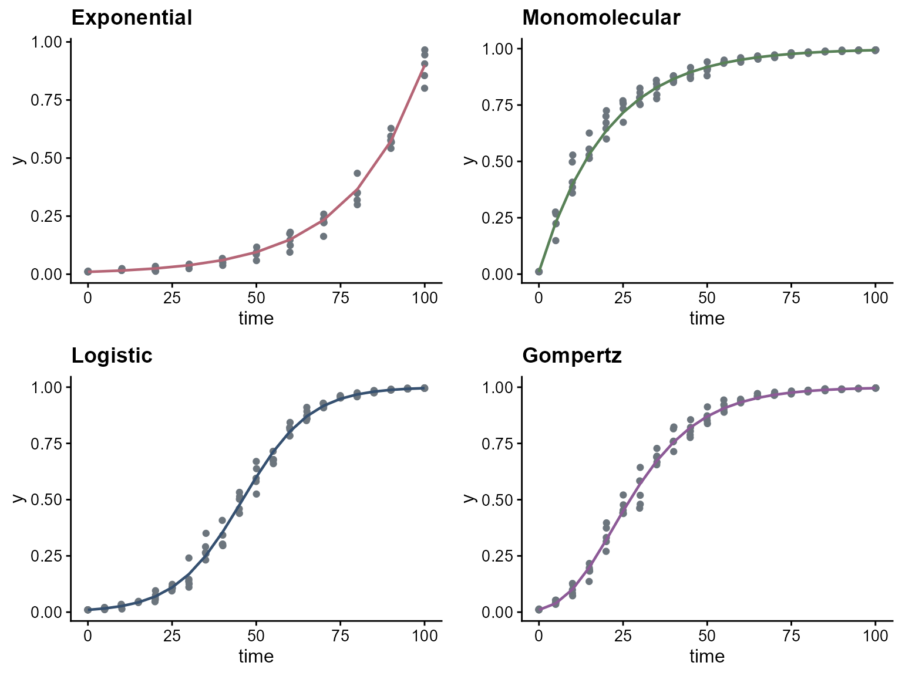

Simulation workflows
Kaique S. Alves
2026-04-11
Source:vignettes/simulation-workflows.Rmd
simulation-workflows.Rmd
library(epifitter)
library(ggplot2)
library(cowplot)
theme_set(cowplot::theme_half_open(font_size = 12))Overview
The sim_ family creates synthetic disease progress
curves that match the same model families used by the fitting
functions.
Simulate four canonical curve shapes
exp_model <- sim_exponential(N = 100, y0 = 0.01, dt = 10, r = 0.045, alpha = 0.2, n = 5)
mono_model <- sim_monomolecular(N = 100, y0 = 0.01, dt = 5, r = 0.05, alpha = 0.2, n = 5)
log_model <- sim_logistic(N = 100, y0 = 0.01, dt = 5, r = 0.10, alpha = 0.2, n = 5)
gomp_model <- sim_gompertz(N = 100, y0 = 0.01, dt = 5, r = 0.07, alpha = 0.2, n = 5)
exp_plot <- ggplot(exp_model, aes(time, y)) +
geom_jitter(aes(y = random_y), width = 0.1, color = "#6c757d") +
geom_line(color = "#b56576", linewidth = 0.8) +
labs(title = "Exponential")
mono_plot <- ggplot(mono_model, aes(time, y)) +
geom_jitter(aes(y = random_y), width = 0.1, color = "#6c757d") +
geom_line(color = "#588157", linewidth = 0.8) +
labs(title = "Monomolecular")
log_plot <- ggplot(log_model, aes(time, y)) +
geom_jitter(aes(y = random_y), width = 0.1, color = "#6c757d") +
geom_line(color = "#355070", linewidth = 0.8) +
labs(title = "Logistic")
gomp_plot <- ggplot(gomp_model, aes(time, y)) +
geom_jitter(aes(y = random_y), width = 0.1, color = "#6c757d") +
geom_line(color = "#8d5a97", linewidth = 0.8) +
labs(title = "Gompertz")
plot_grid(exp_plot, mono_plot, log_plot, gomp_plot, ncol = 2)
Send simulated data into the fitting pipeline
fit_from_sim <- fit_lin(time = log_model$time, y = log_model$random_y)
fit_from_sim$stats_all## # A tibble: 4 × 14
## best_model model r r_se r_ci_lwr r_ci_upr v0 v0_se r_squared RSE
## <int> <chr> <dbl> <dbl> <dbl> <dbl> <dbl> <dbl> <dbl> <dbl>
## 1 1 Logi… 0.101 6.96e-4 0.0998 0.103 -4.65 0.0407 0.995 0.216
## 2 2 Gomp… 0.0723 1.50e-3 0.0694 0.0753 -2.41 0.0879 0.957 0.467
## 3 3 Mono… 0.0559 2.02e-3 0.0519 0.0599 -1.10 0.118 0.881 0.628
## 4 4 Expo… 0.0453 1.99e-3 0.0413 0.0492 -3.55 0.116 0.834 0.617
## # ℹ 4 more variables: CCC <dbl>, y0 <dbl>, y0_ci_lwr <dbl>, y0_ci_upr <dbl>